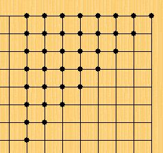

五子棋连珠中的数学【竞答】
#1 五子棋连珠中的数学【竞答】 作者：26 发表时间：2008-6-28 13:35:13
问题1.五子棋盘上任意位置摆一个黑子，有多少种不同的摆法？
问题2.五子棋盘上任意位置摆两个黑子有多少种不同的摆法？
问题3.五子棋盘上任意位置摆一个黑子、一个白子有多少种不同的摆法？
问题4.五子棋盘上任意位置摆两个黑子、一个白子，有多少种不同的摆法？
*当年曾经在中国连珠网问过，未果。
*当年在中国游戏中心五子棋论坛悬赏100元人民币求过答案。也不可得。
*如今不悬赏了哈。
［ 有志青年 于 2008-6-28 13:51:47 时奖励此帖[金币加 20 威望加1］
#2 Re:连珠中的数学 作者：有志青年 发表时间：2008-6-28 13:52:33
总置顶，回答正确的奖励威望和社区金币
#3 Re:连珠中的数学【竞答】 作者：潇洒 发表时间：2008-6-28 14:00:43
第一个问题答案：36
#4 Re:连珠中的数学【竞答】 作者：潇洒 发表时间：2008-6-28 14:01:17
［ 有志青年 于 2008-7-6 5:40:50 时奖励此帖[金币加 20 威望加1］
#5 Re:连珠中的数学【竞答】 作者：月瞳 发表时间：2008-6-28 14:46:01
问题1的计算方法(225-(4×14+1))*8+15=36［ 有志青年 于 2008-7-6 5:40:55 时奖励此帖[金币加 20 威望加1］
#6 Re:连珠中的数学【竞答】 作者：26 发表时间：2008-6-28 15:16:44
问题1我的弱智解答方法：1+2+...+8=36.
问题2我的弱智解答方法A：1+2+...+35=630.（该答案错误，惭愧惭愧）
因为发现：仅仅当黑1在O1的时候，黑2可以选择的位置就有2+3+...+15=119种。
［ 有志青年 于 2008-7-6 5:41:03 时奖励此帖[金币加 20 威望加1］
#7 Re:连珠中的数学【竞答】 作者：潇洒 发表时间：2008-6-28 15:22:38
花花厉害，花花威武
#8 Re:连珠中的数学【竞答】 作者：wsmlx 发表时间：2008-6-28 17:01:06
先解答前三个问题..(糟糕,刚才错了)
问题1:35种(看前面的 )
)
问题2:2926种
问题3:5684种
======================================================
先把棋盘分成以上区域,天元位是"点",棋子所在位置为"线,共8条,每条线有7枚棋子,剩余8片区域为"面",每个面可放28枚棋子
两黑子的组合不外乎以下几种:①点+线 ②点+面 ③线+线 ④线+面 ⑤面+面
首先,①与②情况类似,一起考虑,有1*(7*2+21)=28种可能
③分两种情况,
a.两子所在线"重复"或"对称","重复"指所在线相同,"对称"指所在线关于棋盘对称轴(或对称中心)对称,分阴线与阳线各3种情况,共有C(2,7)*6=126种可能
b.有以下两种(请无视右下角那堆黑棋):
共有72*2=98种
④一条线+一个面,有8种组合,一共有7*21*8=1176种
⑤同样分两种情况
a.两个面关于"重复"或"对称",有6种组合,共C(2,21)*6=1050种
b.两面无特殊关系,仅一种,有212=441种
因此,五子棋盘上任意位置摆两个黑子的不同摆法共有2919种
而一黑一白的情况可以考虑用一个白子替换之前两个黑子中的一个.当然,不是简单的把解答2的结果乘2,棋面对称时,会有重复的,不过有了上面的讨论,也不算太难,这里先讨论上面情况下会出现重复:
①,②和④都不会有重复,无需讨论
③.a的情况会有问题,阴阳二线加起来的6种情况当中,每一种的对应位置(7个)都会产生重复,有6*7种重复
⑤.a的情况也会有问题,有6*21种重复
所以(好累...),五子棋盘上任意位置摆一个黑子、一个白子的不同摆法有2926*2-42-126=5684种
 但..愿...没有..出错........
但..愿...没有..出错........
等待更高的高手找更简便的方法
［ 有志青年 于 2008-7-6 5:44:08 时奖励此帖[金币加 20 威望加1］
#9 Re:连珠中的数学【竞答】 作者：26 发表时间：2008-6-28 18:00:00
果褁∽糖果 17:32:00
我明白了
果褁∽糖果 17:32:16
其实很简单
花影花影花影 17:32:42
花影花影花影 17:32:43
你说
果褁∽糖果 17:33:22
这是大学的内容
果褁∽糖果 17:33:56
排列组合
花影花影花影 17:34:34
排列组合记得是高三的内容。。。
果褁∽糖果 17:34:36
我不会，我只是个高中生，但第一题的答案我知道
花影花影花影 17:34:48
你说下
花影花影花影 17:35:11
你老师愿意做吗？
果褁∽糖果 17:35:35
他说叫我别学那么快啊
花影花影花影 17:35:46
果褁∽糖果 17:35:47
到时候没事做
花影花影花影 17:36:00
哈哈，晕S了。
果褁∽糖果 17:36:24
第一题的答案就是15条直线的交点个数
花影花影花影 17:36:29
刻我需要答案啊，难道等你大一后猜给我答案啊？
果褁∽糖果 17:36:51
我去求求吧
花影花影花影 17:37:04
果褁∽糖果 17:36:24
第一题的答案就是15条直线的交点个数
你是说225，我们的理解是36
果褁∽糖果 17:37:14
不是225
果褁∽糖果 17:37:39
是15条直线的交点个数
花影花影花影 17:38:03
是多少？
果褁∽糖果 17:38:41
105
花影花影花影 17:39:21
吐血
果褁∽糖果 17:39:51
这是从数学上来的
花影花影花影 17:40:39
告诉你老师，第一题的答案必须是36，才符合我们下棋的人的意思。
果褁∽糖果 17:41:05
你可以在棋盘上画画看，肯定
果褁∽糖果 17:41:11
没错啦
花影花影花影 17:42:18
我无语，第一道题目，如何修改下语句，才符合你老师的要求，答案才是36.
果褁∽糖果 17:42:40
我们数学上跟你下棋一样啦
果褁∽糖果 17:43:03
在数学上这些点都是重复的
果褁∽糖果 17:44:06
这105个点是不管你如何旋转棋盘都不可能重合的
花影花影花影 17:44:06
那我请问，第一道题目，如何修改题目，答案就可以等于36呢？你知道的，我们需要36这个答案。
果褁∽糖果 17:44:21
......
果褁∽糖果 17:44:39
我算算
花影花影花影 17:44:42
你发图给我看，这105点是哪些位置？
果褁∽糖果 17:45:41
我不会在棋盘上花图案
花影花影花影 17:46:01
ctrl+鼠标左键
果褁∽糖果 17:48:29
我不在棋盘上画了，我在几何画板上画个图给你吧
*特意进一个数学群，才结识的一个网友。
#10 Re:连珠中的数学【竞答】 作者：wsmlx 发表时间：2008-6-28 18:09:22
105啊 ,他..是怎样办到的....
,他..是怎样办到的....
#11 Re:连珠中的数学【竞答】 作者：茗弈柳扶风 发表时间：2008-6-28 18:16:57
告诉你老师，第一题的答案必须是36，才符合我们下棋的人的意思。
严重同意，嘻嘻。话说回来，这个105也不知道怎么计算出来的。。。好奇。。。
这题好难。。
#12 Re:连珠中的数学【竞答】 作者：wsmlx 发表时间：2008-6-28 19:02:25
再来解答第4问
仍然是按前3题的讨论框架:
两黑一白可以理解为在棋面有两个黑子的情况下填上一个白子,在棋面不对称的情况下,剩余的223个点都是不重复的,棋面对称的情况下,进行删减
①点+线 棋面关于线所在位置所在对称轴对称,白子可有118种落法,共有7*2*118=1480种
②点+面 棋面无对称,共有21*223=4683种
③线+线
a.棋面对称,白118种,共126*118=26208种
b.棋面不对称,共98*223=21854种
④线+面 无对称,共1176*223=262248种
⑤面+面
a.共6种组合,每种组合都有21个具体情况产生重复,重复情况下白119种,那么结果就是[C(2,21)-21]*6*223+21*6*119=267876种
b.无对称,共441*223=98343种
因此加起来一共682790种
#13 Re:连珠中的数学【竞答】 作者：26 发表时间：2008-6-28 19:02:40
果褁∽糖果(825824735) 18:06:38
呜呜我画的要疯掉啦
果褁∽糖果(825824735) 18:08:08
我还是跟你说36为什么错吧
花影花影花影<scgzfeng@163.com> 18:08:13
花影花影花影<scgzfeng@163.com> 18:08:18
好的，你说
果褁∽糖果(825824735) 18:10:45
等等啊，我爸叫我去吃饭了
果褁∽糖果(825824735) 18:10:50
马上回来
花影花影花影<scgzfeng@163.com> 18:10:51
好的。
花影花影花影<scgzfeng@163.com> 18:11:02
不着急
花影花影花影<scgzfeng@163.com> 18:36:19
比如：B3=C2=M2=N3=N13=M14=C14=B13
花影花影花影<scgzfeng@163.com> 18:38:56
B3=C2=M2=N3=N13=M14=C14=B13，这8个点摆一个棋子，对我们来说，是一样的。就是说只能算一种摆法。
果褁∽糖果(825824735) 18:41:11
汗，你有8个点是同一个位置啊！！！！！
果褁∽糖果(825824735) 18:42:20
我们数学上只有4个点是同一个位置
花影花影花影<scgzfeng@163.com> 18:42:22
在8个棋盘上面分别在这8个点上摆一个黑子，对我们来说，是一样的，
果褁∽糖果(825824735) 18:43:03
你这儿不符合数学的推理逻辑，很麻烦的
花影花影花影<scgzfeng@163.com> 18:43:57
就是说，棋盘不仅仅可以旋转，也可以扣过来看。这8个点的形状是一样的。
果褁∽糖果 18:41:11
汗，你有8个点是同一个位置啊！！！！！
果褁∽糖果 18:42:20
我们数学上只有4个点是同一个位置
花影花影花影 18:42:22
在8个棋盘上面分别在这8个点上摆一个黑子，对我们来说，是一样的，
果褁∽糖果 18:43:03
你这儿不符合数学的推理逻辑，很麻烦的
花影花影花影 18:43:56
就是说，棋盘不仅仅可以旋转，也可以扣过来看。这8个点的形状是一样的。
果褁∽糖果 18:44:47
晕，我知道啦，可我们数学上只有旋转没有扣这一说啊
花影花影花影 18:44:59
哈哈。
果褁∽糖果 18:45:19
在数学上这种讲法是错误的
花影花影花影 18:46:30
嗯，你和你老师很严谨，我的题目确实不严谨，可是我也不会用严谨的语言来表达我这几个题目。。。嘿嘿。
果褁∽糖果 18:48:23
汗，我也没办法啊，我可没有爱因斯坦他那么变态，把现在大部分的数学。物理。哲理理论都推翻的本事
花影花影花影 18:51:04
我觉得这几个问题，应该很简单才对。虽然我不会。
果褁∽糖果 18:51:17
十分简单啊
果褁∽糖果 18:51:32
可你一定要扣过来啊
花影花影花影 18:51:38
可是就是找不到答案
果褁∽糖果 18:52:11
我老师不到一分钟就给我回复了
花影花影花影 18:53:34
可他回复的是105.不是36.我需要他回复36.这样他才明白后面三道题我需要问的是什么意思，才好对症下药，给出答案。
果褁∽糖果 18:54:12
为什么你这么肯定36是对的
花影花影花影 18:54:40
对下棋的人来说，答案就是36.
果褁∽糖果 18:54:55
你是怎么知道的
果褁∽糖果 18:55:11
凭直觉
果褁∽糖果 18:55:17
不会把
花影花影花影 18:55:28
我一个一个硬是排列后数出来的。
花影花影花影 18:57:18
这36个点互相位置都不同，且棋盘上其他点都可以在这36个点里面找到等效的点（我不敢说是相等的点，对我们来说就叫等效的点吧）
*
#14 Re:连珠中的数学【竞答】 作者：wsmlx 发表时间：2008-6-28 19:55:19
我快疯了...这是什么对话啊....
你可以跟他说,"扣过来"在数学上指的就是"轴对称"
还有,我那个答案不知可不可以?
#15 Re:连珠中的数学【竞答】 作者：26 发表时间：2008-6-28 20:40:27
我啷个晓得这叫"轴对称"哦。。。
你的答案看的我心都碎了，不晓得对不。（另第一题答案36.你笔误打成35了好像）
#16 Re:连珠中的数学【竞答】 作者：百医天使 发表时间：2008-6-28 20:41:02
第一个应该是36如果除去对称的话，如果是对称的也算的话，是15*15嘛，225嘛因为每个子全是不一样的，就算对称又如何，严格意义来说不是一个点，应该算不同的摆法，下面的几个太难了，我就不说话了
#17 Re:连珠中的数学【竞答】 作者：wsmlx 发表时间：2008-6-28 21:26:28
原来发表3小时以后就不能修改的了
那个35真的错的,现在也改不了了
再看看有没有更简便一点的方法..
#18 Re:连珠中的数学【竞答】 作者：daba 发表时间：2008-6-28 22:07:22
第一题答案为啥不是225.不看坐标？
#31 人的认识是不断提高的=_= 作者：wsmlx 发表时间：2008-7-4 10:32:46
引用：
原文由 wsmlx 发表于 2008-6-30 0:02:59 :第四题:
③线+线
a.棋面对称,黑二子所在线重复,白118种,有C(2,7)*2*118=4956种
b.黑二子所在直线对称,白119种,有(1+2+...+7)*4*119=13328种
c.棋面不对称,共72*2*223=21854种
郁闷了,又发现有问题了...
关于第4题③.b的说法有点问题,应该是类似于⑤.b那样才对,也就是改为
b.黑二子所在直线对称,共4种,其中两种各种情况都是情面对称(就是第1题图的右上与右下的两个),白有119种下法;另外两种每种中各有7种情况棋面对称,白下法有119种,剩下了白有223种下法,因此共有(1+2+...+7)*2*119+7*2*119+[(1+2+...+7)-7]*2*223=17696种
算少了17696-13328=4368种,所以最新的答案是700539+4368=704907种
结果跟天涯独行客不一样,希望他快来详细解释吧,也不知我这还有错没...
#32 Re:连珠中的数学【竞答】 作者：茗弈柳扶风 发表时间：2008-7-7 11:23:48
额滴神啊，看的头晕了都没看懂啊。
#33 Re:五子棋连珠中的数学【竞答】 作者：猫哥哥 发表时间：2008-8-12 1:42:48
拜读了 强 很强 很强大 楼主辛苦了 o(∩_∩)o...哈哈------------------------------------------------------------
小院闲窗安奈竹碳一洗白，重帘未卷影沈沈吸立白
#34 Re:五子棋连珠中的数学【竞答】 作者：26 发表时间：2008-11-2 23:36:41
haha.又看了一遍。#35 Re:五子棋连珠中的数学【竞答】 作者：刀魂 发表时间：2008-11-3 8:14:14
偶是 数学系的。觉得利用 统计学，一下子就能解答出来。。。。
问题1:35种
问题2:2926种
问题3:5684种
应该是答案了，要是错了。。。。那。。。。。
#36 Re:五子棋连珠中的数学【竞答】 作者：26 发表时间：2008-11-3 16:52:01
35楼的朋友，唉，看了你第一题的答案，你真不该读数学系。。。#37 Re:五子棋连珠中的数学【竞答】 作者：刀魂 发表时间：2008-11-3 16:56:43
 晕死。。。。36的 冤枉好人。。。。
晕死。。。。36的 冤枉好人。。。。
#38 Re:五子棋连珠中的数学【竞答】 作者：穿紫蓝色衣服的少年人 发表时间：2008-11-3 20:13:00
对我来说太难了#39 Re:五子棋连珠中的数学【竞答】 作者：我是棋手 发表时间：2009-1-11 11:55:08
问题1：225
问题2：2*225*224=100800
问题3：2*225*224=100800
问题3：6*225*224*223=11239200
就是不知道对不对....- -!
#40 Re:五子棋连珠中的数学【竞答】 作者：我是棋手 发表时间：2009-1-11 11:56:21
因为有坐标，所以不考虑对称 哈哈~#41 Re:五子棋连珠中的数学【竞答】 作者：五子天涯 发表时间：2009-5-26 11:35:40
如果不考虑对称点
问题1：15*15=225
问题2：225*224/2=25200 （两个黑子是组合问题）
问题3：225*224=50400 （一黑一白是排列问题）
问题4：25200*223=5619600（问题2的基础上再加一白子）
［ 失落刀 于 2009-5-30 15:30:34 时花20金币送鲜花一朵］
#42 Re:五子棋连珠中的数学【竞答】 作者：五子天涯 发表时间：2009-5-26 13:47:27
不考虑对称点，每走一手棋，有多少种变化？
1手：15*15=225
2手：225*224=50400
3手：(225*224/2)*223=561,9600
4手：(225*224/2)*(223*222/2)=6,2377,5600
5手：(225*224*223/3/2)*(222*221/2)=459,5146,9200
6手：(225*224*223/3/2)*(222*221*220/3/2)=3,3697,7440,8000
7手：(225*224*223*222/4/3/2)*(221*220*219/3/2)=184,4951,4883,8000
8手：(225*224*223*222/4/3/2)*(221*220*219*218/4/3/2)=1,0054,9856,1167,1000
9手：(225*224*223*222*221/5/4/3/2)*(220*219*218*217/4/3/2)=43,6386,3755,4652,1000
10手：(225*224*223*222*221/5/4/3/2)*(220*219*218*217*216/5/4/3/2)=1885,1891,4236,0970,0000
11手：(225*224*223*222*221*220/6/5/4/3/2)*(219*218*217*216*215/5/4/3/2)=6,7552,6109,3460,1500,0000
12手：(225*224*223*222*221*220/6/5/4/3/2)*(219*218*217*216*215*214/6/5/4/3/2)=240,9376,4566,6745,0000,0000
225手：即113黑子112白子摆满棋盘
225!/113!/112!=(225*224*223*......*116*115*114)/(112*111*110*......7*6*5*4*3*2)= 2.85860700508283*10的66次方
［ 失落刀 于 2009-5-30 15:31:02 时花20金币送鲜花一朵］
#43 Re:五子棋连珠中的数学【竞答】 作者：失落刀 发表时间：2009-5-26 14:26:55
五子天涯朋友，第一题我们假设标准答案和真理答案是等于36.那么请你根据这个道理做下面的几道题。
这样答案才符合问题的意义。
#44 Re:五子棋连珠中的数学【竞答】 作者：五子天涯 发表时间：2009-5-26 20:01:19
按失落刀要求，除去对称点。
纵观各楼答案（第22楼--30楼的内容看不到），第1题等于36，以无争议。只是36是如何得到的呢？我们探讨一下计算方法：
4楼是画个图数一下
5楼：月瞳
问题1的计算方法(225-(4×14+1))*8+15=36
5楼的计算方法是莫名其妙的，其结果不等于36，而是等于1359。
(225-(4×14+1))*8+15=1359
6楼：26
问题1我的弱智解答方法：1+2+...+8=36.
问题2我的弱智解答方法A：1+2+...+35=630.（该答案错误，惭愧惭愧）
看问题2的结果就知道 问题1的解答方法是站不住脚的。
我们知道棋盘有15*15=225个点，那么有多少个对称点呢？
天元：只有1个点，没有对称点。
轴线点：在横中轴线、纵中轴线、左斜中轴线、右斜中轴线上的点，除去天元共有56个点。
(15-1)*4=56
中轴线上的每个点都有3个对称点(加本身是4个)，除去对称点，轴线点有14个
56/4=14
非轴线点：除去天元和轴线点，共有168个点。
225-1-56=168
每个非轴线点都有7个对称点(加本身是8个)，除去对称点，非轴线点有21个
168/8=21
所以，正确的计算方法是 天元+轴线点+非轴线点
1+14+21=36
［ 失落刀 于 2009-5-26 20:38:34 时奖励此帖[金币加 20 威望加1］
#45 Re:五子棋连珠中的数学【竞答】 作者：失落刀 发表时间：2009-5-26 20:40:43
期待五子天涯继续解答问题2.3.4.#46 Re:五子棋连珠中的数学【竞答】 作者：五子天涯 发表时间：2009-5-27 21:46:41
先解问题三:
1.黑子在天元：
问题一已明确有 36 个非对称点，所以白子有 35 个非对称点。
36 - 1 = 35
2.黑子在轴线点：
对于每个轴线点，除黑子所在的轴线外，白子有半个棋盘是对称的，所以白子有 119 个非对称点。
15 * 14 / 2 + 14 = 119
黑子有 14 个轴线点，白子共有 1666 种变化。
14 * 119 ＝ 1666
3.黑子在非轴线点：
对于每个非轴线点，白子在任意一点都是不对称的，所以白子有 224 个非对称点。
225 - 1 = 224
黑子有 21 个非轴线点，白子共有 4704 种变化。
21 * 224 = 4704
以上合计，问题三共有 6405 种变化。
35 + 1666 + 4704 = 6405
［ 失落刀 于 2009-5-29 21:53:44 时奖励此帖[金币加 20 威望加1］
#47 Re:五子棋连珠中的数学【竞答】 作者：五子天涯 发表时间：2009-5-27 22:46:19
问题二与问题三相比，将一黑一白换成了两黑子，因此只要将问题三中黑白两子位置相同而顺序不同的变化减半即可。
1.一子在天元：
与问题三相同，有 35 个非对称点。
2.一子在轴线点：
问题三有 1666 种变化。
一子所在的轴线除去本子有 13 个点，加上非轴线点 21 个 共 34 个点。
轴线点有 14 个， 所以需要减半的变化有 476 个。
14 * (14 - 1 + 21) ＝ 476
一子在轴线点的变化有 1428 种
1666 - 476 / 2 = 1428
3.两子在非轴线点：
一子在非轴线点有 21 个，另一子在全部非轴线点有 167 个，共有 3507 种变化。
21 * (168 - 1) = 3507
由于两黑子有大量重复，需要减半的变化有 3402 个。
21 * (168 - 6) ＝ 3402
所以两子在非轴线点有 1806 种
3505 - 3402 / 2 = 1806
以上合计，问题二共有 3269 种变化。
35 + 1428 + 1806 = 3269
-----------------------------------------------------
对于问题二和问题三，我用 Basic 语言编程：在上下翻转、左右翻转、45°翻转、135°翻转、左旋90°、右旋90°、旋转180°等情况下，除去全部对称、重复的点，经验证，两题的中间答案和最终答案准确无误！
［ 失落刀 于 2009-5-28 0:15:25 时奖励此帖[金币加 20 威望加1］
#48 Re:五子棋连珠中的数学【竞答】 作者：王小 发表时间：2009-5-27 23:26:08
其实用计算机编程，就比较简单，不需要哪么复杂。
只要两点和圆心构成的三角型不相同的充分必要条件是这两点构成的图形不相同。也就是说，三
条边不相等就可以断定不是相同的放法。
同样的道理可以到任何的多个黑棋。
现在我还没有想出这个办法，扎个用数学来实现。
但是编程很容易。
1 当放一个黑棋的时候 就是 这个黑棋和圆心的距离，所有不同的距离个数。（可以理解成两边形，只是
两条边相等而已）
2 当放两个棋，就是这两个棋和圆心构成的三角形的同形。也就是三条边都相等。
3. 以此类推，N个棋，就是N个棋和圆心构成的N+1边形同形。也就是N+1条边都相等。
［ 失落刀 于 2009-5-28 0:15:48 时花20金币送鲜花一朵］
#49 Re:五子棋连珠中的数学【竞答】 作者：五子天涯 发表时间：2009-5-28 23:35:41
与王小朋友探讨编程问题
王小朋友的编程思路是非常好的，比将棋盘翻来覆去要简单的多。但不知你有没有实际编程。
1 当放一个黑棋的时候 就是 这个黑棋和圆心的距离，所有不同的距离个数。（可以理解成两边形，只是两条边相等而已）
按这个思路编程所得到的结果是 34 ，而标准答案是 36 。为什么会少两个点呢？
原来有些点并不对称，但距天元的距离却是相等的。如图所示：
两个黑子距天元的距离都等于 5 ，但却不对称。两个白子距天元的距离都等于 7.07 ，也是不对称的 。
2 当放两个棋，就是这两个棋和圆心构成的三角形的同形。也就是三条边都相等。
这是当两个棋子同色的时候(如问题二)，如果不同色(如问题三)该怎么办呢？
3. 以此类推，N个棋，就是N个棋和圆心构成的N+1边形同形。也就是N+1条边都相等。
同样，边长都相等的两个多边形不一定是对称的，如图所示：
三个黑子同天元构成的四边形的边长是：7、5、5、7 ，三个白子同天元构成的四边形的边长也是：7、5、5、7 ，但黑子和白子是不对称的。
#50 Re:五子棋连珠中的数学【竞答】 作者：五子天涯 发表时间：2009-5-29 19:51:23
问题四的解法：
问题四是两黑一白，即在问题二的基础上加一白子。
两黑子有 3269 种不同的组合。其中两个黑子在同一条中轴线上，或者两个黑子位置对称的，白
子除对称轴上的点外，均有对称点。两黑子的其它情况，白子在任意点都无对称点。
1.两黑子同轴且与天元等距离：
两个黑子在同一条中轴线上，并且距天元距离相等，如 H2-H14，有 14 种组合。
在每种组合下，计算白子的不对称点：
天元 1 个点，黑子所在的对称轴有 6 个点， 另一条对称轴有7 个点，非对称轴上的每个点都有 3 个对称点，故有 49 个点。
( 225 - 14 *2 -1 ) / 4 = 49
合计有 63 个不对称点。
1 + 6 + 7 + 49 = 63
换一种说法，在每种组合下，除对称轴上的点以外，白子每个点都有 3 个对称点，只要计算 1/4 棋盘，再减一个黑子占的点即可。
8 * 8 - 1 = 63
两黑子 14 种组合，白子共有 882 种变化。
14 * 63 = 882
2.两黑子同轴但与天元不等距：
两个黑子在同一条中轴线上，但与天元不等距,如 H2-H5, 有112 种组合。再减去第1项等距的，还有 98 种组合。
8 * 7 * 2 - 14 = 98
在每种组合下，计算白子的不对称点：
黑子所在的对称轴有 13 个点，非对称轴上的每个点都有对称点，故有 105 个点。
( 225 - 15 ) / 2 = 105
合计有 118 个不对称点。
13 + 105 = 118
两黑子 98 种组合，白子共有 11564 种变化。
98 * 118 = 11564
3.两黑子依中轴线对称：
两黑子依中轴线对称，但黑子不在对称轴上，如 A2-A14，除对称轴上的点外，黑子都有对称点， 共有 105 个点，除去第1项中重复的， 还有 98 种组合。
( 225 - 15 ) / 2 - 14 / 2 = 98
在每种组合下，计算白子的不对称点：
对称轴上有 15 个点，黑子占 2 个点，其它点都对称，故有 119 个点。
15 + ( 225 - 15 - 2 ) / 2 = 119
两黑子 98 种组合，白子共有 11662 种变化。
98 * 119 = 11662
4.两黑子都是非轴线点且旋转 180°对称：
两黑子不依中轴线对称，而是旋转 180°对称，如 A2-O14。
21 个非轴线点，每点 1 个组合，即有 21 种组合。
在每种组合下，除天元外，白子都有对称点，故有 112 个不对称点。
( 225 - 1 ) / 2 = 112
两黑子 21 种组合，白子共有 2352 种变化。
21 * 112 = 2352
5.以上四种情况以外的两黑子组合：
以上四种情况以外的两黑子组合，有 3038 种。
3269 - 14 - 98 - 98 -21 = 3038
在每种组合下，白子任意点都不对称。故有 223 个点。
#51 Re:五子棋连珠中的数学【竞答】 作者：失落刀 发表时间：2009-5-29 21:21:47
感谢五子天涯朋友。送1000金币表示谢意，请查收。［ 五子天涯 于 2009-5-29 22:02:08 时花20金币送鲜花一朵］
#52 Re:五子棋连珠中的数学【竞答】 作者：五子天涯 发表时间：2009-5-29 22:05:36
金币收到了，谢谢失落刀朋友！在您的鼓励和鞭策下，我费了九牛二虎之力，方解开这四个问题。
再次感谢！回赠鲜花一束。祝你愉快！
#53 Re:五子棋连珠中的数学【竞答】 作者：王小 发表时间：2009-5-30 0:03:35
五子天涯说的对，我只是想到了。还没有实际编程看结果，确实有你说的问题。
我准备研究一下先。
我想了一下 有一个问题，为什么我们要把x 和 y 的权重的设置成1呢？
如果 距离= sqrt( 1000x*1000x + y*y ) , 还有问题么？
我还没有想好，我再研究一下。
我觉得你的解法很好，很强大，但是总觉得有可以简化的地方。
我也觉得可以做出N个棋子的统一公式的。（感觉）
最近，工作比较忙，又的下论坛战，可能短时间做不出来，大家再想想简单的办法吧。
［ 失落刀 于 2009-5-30 14:31:50 时花20金币送鲜花一朵］
#54 Re:五子棋连珠中的数学【竞答】 作者：五子天涯 发表时间：2009-5-30 9:50:57
与王小朋友探讨编程问题
把 X 和 Y 的值设为不同，解决了有些距离相等的点不对称的问题，但又出现了新的问题。
S = Sqr ( 1000X * 1000X + Y * Y )
按这个公式计算所得到的结果是 59 ，比 36 多了 23 个点。为什么呢？
原因是棋盘变形了，凡是以左斜和右斜中轴线对称的点因距离不等而不对称了，如图所示：
这两个子是以左斜中轴线对称的，但距离却不相等了。
黑子距天元的距离 = 5000.00089999992
白子距天元的距离 = 3000.00416666377
感觉对称问题很复杂，期待着王小朋友做出 N 个棋子的统一公式。
#55 Re:五子棋连珠中的数学【竞答】 作者：王小 发表时间：2009-5-30 10:24:35
不好意思，搞错了。这个。。。。。
单点是没有办法用三角形固定的说法。两点，n点（n》2)，感觉可以。但是我都还没有证明出来。
我下面来说一个排列组合的方法。其实和你的差不多。
#56 Re:五子棋连珠中的数学【竞答】 作者：王小 发表时间：2009-5-30 10:52:46
我们发现，如果放一个子，只需要放在区域1中，其他区域均可以有这个区域的变换出来。如果放第二子，两个子都在区域1中的话，我就不用讨论了，这个就是区域一种的组合。同样的如果只有一个子在区域1中，那么就有3中情况，在原点，第一个子边界上且不在原点，不在边界上，我们注意到到在原点，其实所以的选点其实又只能在区域1中选，所以其实都算过了，不需要再算了，如果点在边界上不在原点，这个相当于只能做所在的轴翻转了，也就是说只能在2区域选点了。如果不在边界上，我们发现x，y轴都被固定了，也就是说可以在剩下的区域任意选点，也就是可以在2，3区域任意选点。同样的讨论方式，可以讨论出，当选第三个点的时候，如果第二点在第2区区域的轴点上选点，任然轴对称，也就是选点任然在2区，也就是已经算过了，第2点在2区的非轴点上，那么就可以选择3区了。呵呵，说的比较绕过，呵呵。
第一区域有 36个点，其中轴上非原点的点有 2*7 个， 非边界的点有 21
第二区域有 84个点，边界上有7个点，非边界点有77个
第三区域有 105个点
二三区域一共 189个点
好了，有上面的理解，我们解题就不难了。
第一题， 很简单 C1-36 = 36
第二题 C2-36 + 2 * C1-7 * C1-84 + C1-21 * C1-189 =36*35/2 + 2*7*84 + 21*189 = 5775
［ 失落刀 于 2009-5-30 14:25:48 时花20金币送鲜花一朵］
#57 Re:五子棋连珠中的数学【竞答】 作者：王小 发表时间：2009-5-30 10:59:17
第三题， P2-36 + 2 * C1-7 * C1-84 + C1-21 * C1-189 =36*35 + 2*7*84 + 21*189 = 6405
第四题：明天来解答，大家看看上面的解法有问题么？呵呵
#58 Re:五子棋连珠中的数学【竞答】 作者：王小 发表时间：2009-5-30 12:13:06
算法还是有问题，改天研究。
#59 Re:五子棋连珠中的数学【竞答】 作者：五子天涯 发表时间：2009-5-30 13:39:41
好绕口啊！我看了三遍才看明白。发现第二题的算法有问题：
如果不在边界上，我们发现x，y轴都被固定了，也就是说可以在剩下的区域任意选点，也就是可以在2，3区域任意选点。
这个结论对第三题是对的，对第二题就不适用了。
第二题 C2-36 + 2 * C1-7 * C1-84 + C1-21 * C1-189 =36*35/2 + 2*7*84 + 21*189 = 5775
公式的第三部分 21*189 是一子在第一区域，另一子包含了第二、第三区域中的所有点，由于两个棋子都是黑子，这里面有大量的重复和对称，如下面两个图就是一样的。
所以，第二题的答案是错的。
#60 Re:五子棋连珠中的数学【竞答】 作者：失落刀 发表时间：2009-5-30 14:31:12
54楼的两个棋子至天元的距离不相等啊？请通俗解释下。没看懂。
你两后面的交流帖子，我都看不懂。

#61 Re:五子棋连珠中的数学【竞答】 作者：五子天涯 发表时间：2009-5-30 16:24:04
向失落刀大姐解释一下，我和王小在探讨编程解题的算法。
王小在 48 楼建议：当放一个黑棋的时候，就是这个黑棋和圆心的距离，所有不同的距离个数。
黑棋和圆心的距离，就是黑棋到天元的平行距离的平方加上黑棋到天元的垂直距离的平方，再开平方根。
S = Sqr ( X * X + Y * Y )
但编程计算的结果是 34 个点，原因是有些点并不对称，但距天元的距离却是相等的。参见 49 楼图。
王小在 53 楼又建议：将平行距离一格设为 1000 ,垂直距离一格还是 1。即按如下公式计算:
S = Sqr ( 1000X * 1000X + Y * Y )
这样计算所得到的结果是 59 个点，原因是棋盘变成长方形了，如 54 楼图所示：两个棋子是以斜线对称的，两个棋子至天元的距离原是相等的，但按第二个公式计算却不等了。所以多了 23 个点。
我举这个例子是为了说明 53 楼的建议是行不通的。
失落刀大姐听懂了吗？
［ 有志青年 于 2009-5-30 17:04:07 时奖励此帖[金币加 20 威望加1］
#62 Re:五子棋连珠中的数学【竞答】 作者：失落刀 发表时间：2009-5-30 17:02:39
嘿嘿，听懂了听懂了，哎，无知真可怕呀。
#63 Re:Re:五子棋连珠中的数学【竞答】 作者：五子天涯 发表时间：2009-5-30 20:05:29
引用：
原文由 王小 发表于 2009-5-30 10:59:17 :第三题， P2-36 + 2 * C1-7 * C1-84 + C1-21 * C1-189 =36*35 + 2*7*84 + 21*189 = 6405
57楼王小第三题的解法很好，与我的解法有异曲同工之妙。
#64 Re:五子棋连珠中的数学【竞答】 作者：失落刀 发表时间：2009-9-20 20:14:27
ShowPost.asp?ThreadID=7264#65 Re:Re:连珠中的数学【竞答】 作者：龙之紫辰 发表时间：2009-9-21 21:51:29
 准确的说 这可以用高三数学有关排列组合的知识解答
准确的说 这可以用高三数学有关排列组合的知识解答